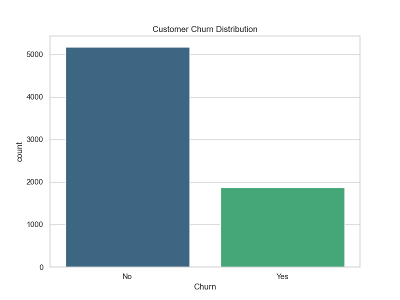
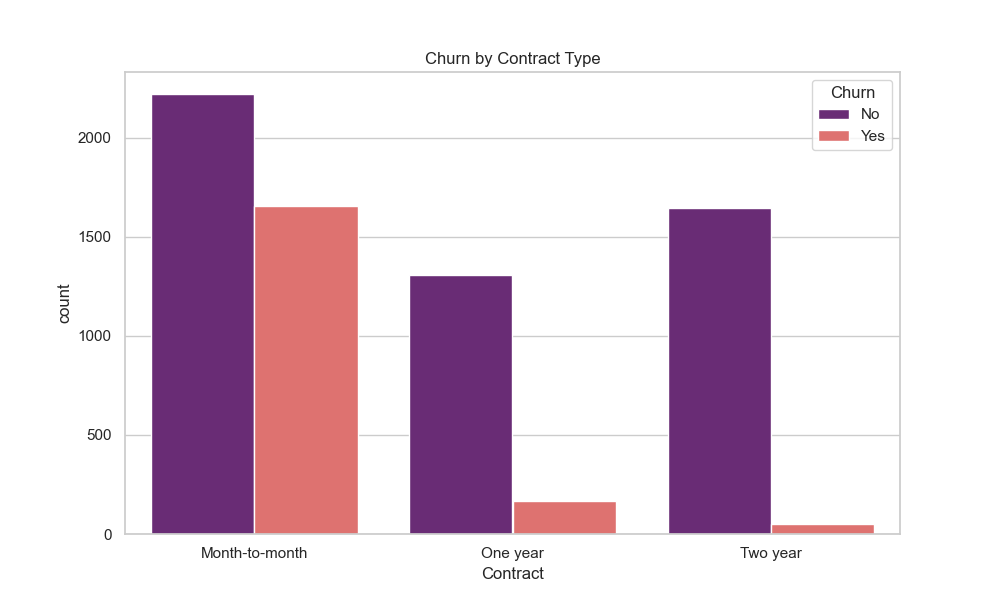
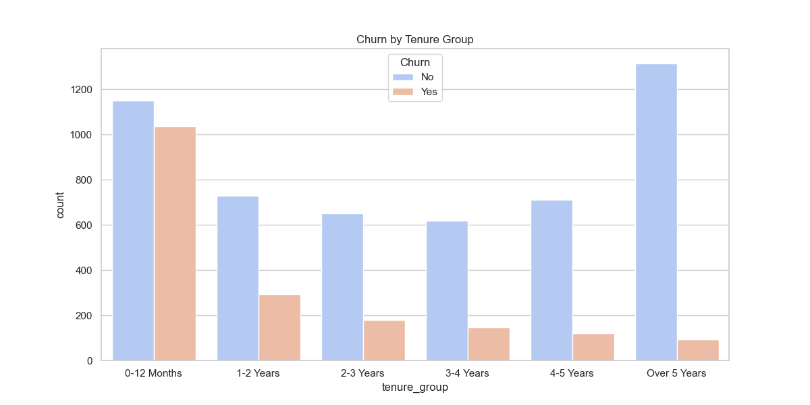
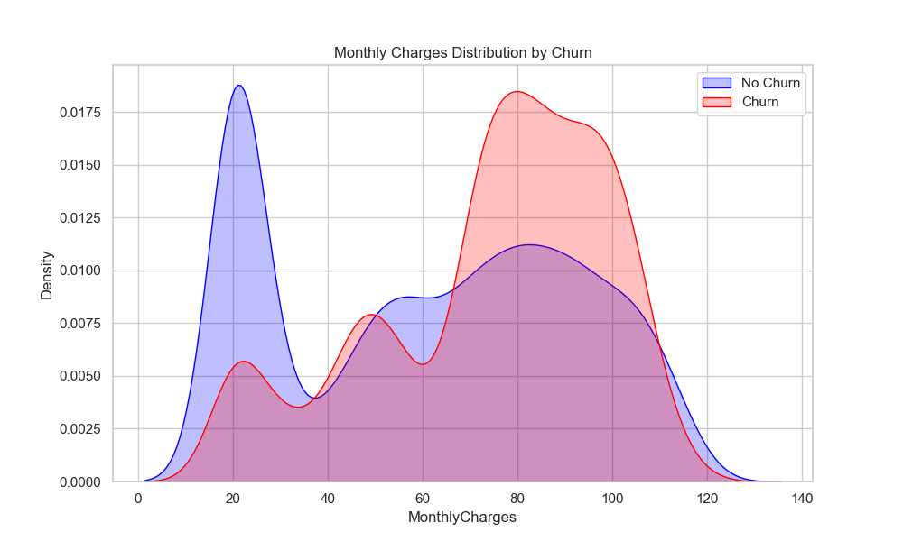

Strategic Business Overview | Generated on March 11, 2026
Our predictive system has identified 1361 customers at imminent risk of churn.
Immediate Revenue Opportunity: $103,658.80
Targeting these customers with prioritized retention campaigns could stabilize over 20% of current monthly revenue leakage.




Implement annual contract incentives for Month-to-Month users (Churn Risk: 42%). One-year plans reduce churn to <10%.
Audit Fiber Optic service stability. High churn in premium segments suggests quality frustration or pricing gaps.
Bundle 'Tech Support' and 'Online Security' for at-risk clusters. Data shows these features increase customer stickiness by 25%.
Retaining 15% of High-Risk customers generates $15,500/month in recovered revenue.